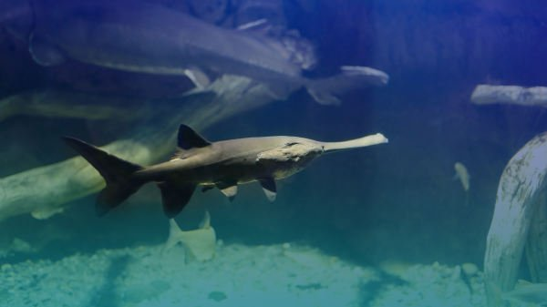

生物介紹：
白鱘（學名：Psephurus gladius），或稱作中華匙吻鱘，和生活在密西西比河的匙吻鱘同屬匙吻鱘科的魚類物種。另名為中國劍魚、劍吻白鱘，因為其吻部長狀如鴨嘴，也可俗稱為鴨嘴鱘，也有些白鱘的吻平直如劍，因此也可被稱為「象鼻鱘」。中國古代白鱘被稱之為鮪。當代因為其生存水域遭受破壞，其物種稀少，所以有「水中大熊貓」之稱。其個體腹部黑白色頭部灰色，白鱘以其他魚類和小型蝦蟹為食。其個體7－8年成熟，身長可達2米體重達到250公斤，最大可已長到3米體重達到300公斤，所以為世界上最大的淡水魚之一。
分布：
種群多生活於長江中下游水域，個別的生存於水域廣闊的湖泊中。
原因：
該物種的滅絕主要是由於過度捕撈和棲息地破碎
保育：
雖然1983年中國政府已將白鱘列為保護物種並禁止對其捕撈，但由於新建的水壩將不同水域的白鱘種群隔離，由此其生存環境面臨嚴重威脅。